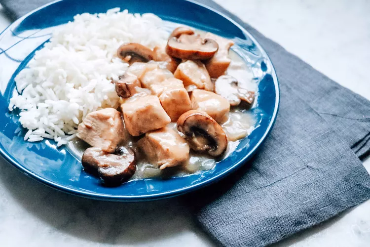

Creamy Chicken Marsala

Description
An easy, delicious, and creamy chicken Marsala in just 20 minutes! Serve over whole wheat pasta or brown rice.
Ingredients
- 3 tablespoons olive oil
- salt and ground black pepper to taste
- 2 skinless, boneless chicken breasts, cut into cubes
- 1 onion, diced
- 1 cup sliced cremini mushrooms
- 1 (10.5 ounce) can condensed cream of mushroom soup
- 1 cup Marsala wine
Steps